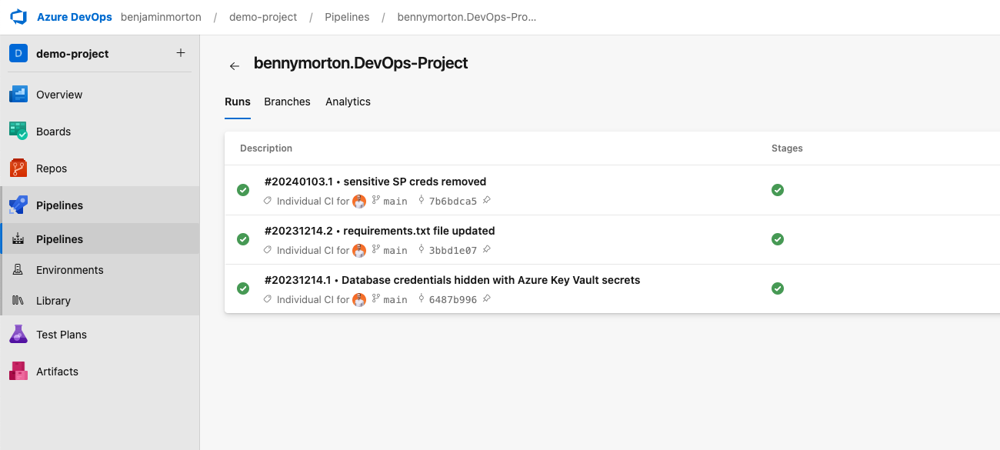
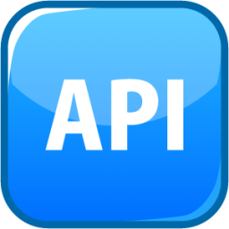

Projects

Auto Job Applicator
In the works...
End-to-end DevOps Pipeline
This is the final project completed by students of AiCore specialising in cloud & DevOps, I helped design and review it in my role as Content Engineer.
The project is a Flask web app that allows you to efficiently manage and track orders for a potential business. The aim of this project was to give students as much exposure as possible to the most in-demand DevOps tools and technologies, listed below.
Tools and Technologies Used
- Python for scripting the Flask app
- Advanced git & github for version control
- Docker for containerisation
- Kubernetes for container orchestration
- Terraform for IaC, including multiple modules and remote backend storage
- AKS (Azure Kubernetes Service) for container orchestration in the cloud
- Azure DevOps to create a CI/CD pipeline for the whole process
ETL Data Pipeline
This project is an end-to-end cloud-based data engineering project that I built as a student at AiCore, in 2022.
It simulates real user activity on Pinterest, by leveraging AWS and Databricks to handle both batch and streaming data processing. The pipeline processes user-generated posts, geolocation data, and user metadata through a scalable architecture that integrates various cloud services for data ingestion, transformation, and querying.
Tools and Technologies Used
- AWS MSK (Managed Streaming for Apache Kafka) for managing Kafka clusters.
- S3 for data storage.
- AWS Kinesis for real-time data streaming.
- Databricks for data cleaning, transformation, and querying.
- Apache Airflow (AWS MWAA) for orchestration and automation via Directed Acyclic Graphs (DAGs).
- Confluent Kafka REST Proxy for API integrations.
- Apache Spark for streaming and batch data processing.
- Python for scripting
Tech Stack
General
 Python
Python Linux, MacOS
Linux, MacOS git
git- APIs
DevOps Stack
- Terraform
-
- Kubernetes, Helm
- Networking
 Docker
Docker
Data Engineering Stack
 SQL
SQL Databricks
Databricks- Kafka
 Airflow
Airflow- Spark
- Pandas
AWS
- EC2, S3, RDS
 MWAA, MSK, Kinesis
MWAA, MSK, Kinesis- CloudFormation, API Gateway, Glue
Azure
- Azure DevOps
- AKS
- Monitor, EntraID
- SQL Database
PythonLinux, MacOSgit- Terraform
- Kubernetes, Helm
- Networking
- Docker
Data Engineering Stack
- SQL
- Databricks
- Kafka
- Airflow
- Spark
- Pandas
AWS
- EC2, S3, RDS
- MWAA, MSK, Kinesis
- CloudFormation, API Gateway, Glue
Azure
- Azure DevOps
- AKS
- Monitor, EntraID
- SQL Database